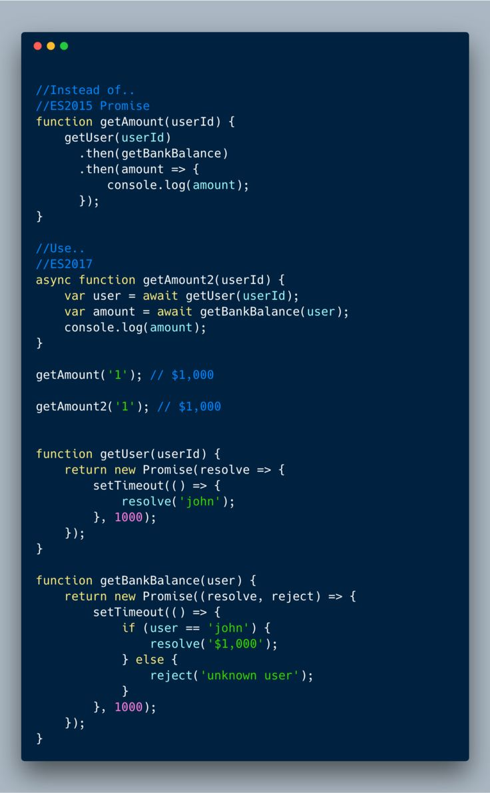

<\> CodeSchool
Изучение PHP всегда начинается с малого
Обучитесь PHP, чтобы найти работу своей мечты
перейти к обучению


О профессии
PHP входит в десятку самых популярных языков программирования в рейтинге TIOBE. На нём написано большинство CMS, в том числе и WordPress, на котором работает 65% всех сайтов в мире. PHP под капотом у Wikipedia, ВКонтакте и YouTube. Разработчики развивают язык уже более 25 лет и внедряют новые возможности с каждой версией.
Чтобы поддерживать работу старых проектов и писать веб-приложения с нуля, компании нанимают программистов на PHP.
Чтобы поддерживать работу старых проектов и писать веб-приложения с нуля, компании нанимают программистов на PHP.

200 компаний
ищут junior-PHP-разработчиков
60 000 рублей
средняя зарплата начинающего PHP-разработчика, по данным hh.ru
В любое время и в любом месте.
Учитесь без отрыва от работы. Выделяйте на учебу столько времени, сколько имеете прямо сейчас, — 15 минут или 2 часа.

С фокусом на практику
Чтобы вы быстрее развили нужные навыки, у нас есть практические задания для закрепления обученного материала.
➡️
Введение в php
1. Синтаксис
Код в PHP заключается в открывающий ?php и закрывающий ? теги. Согласно стандарту кодирования PSR-12, закрывающий тег должен быть опущен в файлах, содержащих только код PHP. В конце строки ставят разделитель строк – точку с запятой ;. Если забыть поставить разделитель, то следующая строка кода соединится с предыдущей и интерпретатор PHP выдаст ошибку. Выведем на экран строку Hello World (заключена в кавычки) с помощью команды echo:
<?php
echo 'Hello, World.'; // Hello, World.
через функцию print:
<?php
print 'Hello, World.'; // Hello, World.
через функцию printf (выводит отформатированную строку):
<?php
printf('Hello, World.'); // Hello, World.
или через функцию print_r(), выводящую информацию в удобочитаемом виде:
<?php
print_r('Hello, World.'); // Hello, World.
Чтобы перенести строку используем символ \n, который работает только в двойных кавычках:
<?php
print_r("Hello, World.\nHello, Coder.");
/*
Hello, World.
Hello, Coder.
*/
2. Объявление переменной
PHP – язык со слабой типизацией, то есть перед объявлением переменной не нужно задавать ее тип. Чтобы объявить переменную, перед ее именем ставят знак доллара $:
$animal = 'Cat';
Здесь:
переменной animal присвоили значение Сat.
Выведем на экран переменную animal:
<?php
$animal = 'Cat';
echo $animal; // Cat
Одно значение можно присвоить нескольким переменным:
<?php
$first_animal = $second_animal = $third_animal = 'Cat';
echo "$first_animal"; // Cat
echo "$second_animal"; // Cat
echo "$third_animal"; // Cat
Комментарии
Однострочный комментарий начинается с двух слешей // или хеш-символа #, а многострочный заключается в /* */:
<?php
// однострочный комментарий
# однострочный комментарий
/*
многострочный
комментарий
*/
3. Типы данных
3.1. Строки
Строка – набор символов, заключенный в одиночные '' или двойные кавычки "":
<?php
$first_animal = 'Cat';
$second_animal = "Dog";
Конкатенация строк
Оператор конкатенации точка . соединяет левый и правый аргументы:
<?php
$first_animal = 'Cat';
$second_animal = 'Dog';
$animals = $first_animal . $second_animal;
echo "$animals"; // CatDog
Оператор присваивания с конкатенацией .= присоединяет правый аргумент к левому:
<?php
$first_animal = 'Cat';
$second_animal = 'Dog';
$third_animal = 'Giraffe';
$animals = $first_animal;
$animals .= $second_animal;
$animals .= $third_animal;
echo "$animals"; // CatDogGiraffe
Чтобы перенести слово на новую строку воспользуемся символом переноса \n, который работает только в двойных кавычках:
<?php
$first_animal = "Cat\n";
$second_animal = "Dog\n";
$third_animal = "Giraffe";
$animals = $first_animal;
$animals .= $second_animal;
$animals .= $third_animal;
echo "$animals";
/*
Cat
Dog
Giraffe
*/
3.2. Числа
Целое число (integer) не имеет дробной части:
<?php
$number_one = 5678; // целое положительное число
$number_two = -5678; // целое отрицательное число
Число с плавающей точкой
Число с плавающей точкой имеет дробную часть и задается следующий образом:
<?php
$number_one = 1.5678; // 1.5678 – положительное число с плавающей точкой
$number_two = -1.5678; // -1.5678 – отрицательное число с плавающей точкой
$number_three = 1.5678e0; // 1.5678 – положительное число с плавающей точкой
$number_four = 1.5678e2; // 156.78 – положительное число с плавающей точкой
$number_five = 1.5678E-2; // 0.015678 – положительное число с плавающей точкой
Чтобы узнать тип переменной воспользуемся функцией gettype(), а для преобразования числа с плавающей точкой в целое число функцией intval():
<?php
$number_one = 1.5678; // 1.5678 – положительное число с плавающей точкой
echo gettype($number_one); // double
$number_one = intval($number_one);
echo $number_one; // 1
echo gettype($number_one); // integer
➡️
Конструкция switch..case
Конструкция switch..case является альтернативой использованию конструкции if..elseif..else. Оператор switch получает некоторое выражение и сравнивает его с набором значений:
switch (выражение){
case значение1: действия; break;
case значение2: действия; break;
//...........................
case значениеN: действия; break;
}
После ключевого слова switch в скобках идет сравниваемое выражение. Значение этого выражения последовательно сравнивается со значениями, помещенными после операторов сase. И если совпадение будет найдено, то будет выполняться определенный блок сase.
Конструкция switch может содержать произвольное количество операторов case. В конце блока сase ставится оператор break, чтобы избежать выполнения других блоков.
Весь блок switch помещается в фигурные скобки, однако блок каждого отдельного оператора case НЕ помещается в фигурные скобки.
Например, возьмем следующую конструкцию if..elseif..else:
$a = 3;
if($a==1) echo "сложение";
elseif($a==2) echo "вычитание";
elseif($a==3) echo "умножение";
elseif($a==4) echo "деление";
Теперь перепишем ее с помощь конструкции switch..case:
$a = 3;
switch($a)
{
case 1:
echo "сложение";
break;
case 2:
echo "вычитание";
break;
case 3:
echo "умножение";
break;
case 4:
echo "деление";
break;
}
То есть на вход в конструкцию switch передается переменная $a<, и ее значение последовательно сравнивается со значениями, указанными после операторов case. Так, в данном случае переменная $a равна 3, поэтому выполнение дойдет до блока
case 3:
echo "умножение";
break;
и этот блок и будет выполняться.
Если мы хотим также обработать ситуацию, когда совпадения не будет найдено, то можно добавить блок default:
$a = 3;
switch($a)
{
case 1:
echo "сложение";
break;
case 2:
echo "вычитание";
break;
default:
echo "действие по умолчанию";
break;
}
Конструкция switch..case также поддерживает альтернативный синтаксис, при котором вместо открывающей блок фигурной скобки ставится двоеточие, а вместо закрывающей фигурной скобки - ключевое слово endswitch:
$a = 3;
switch($a):
case 1:
echo "сложение";
break;
case 2:
echo "вычитание";
break;
default:
echo "действие по умолчанию";
break;
endswitch
Функции
Функции представляют собой блок инструкций, которые многократно можно вызывать в различных частях программы. Функции позволяют разделять программуу на меньшие функциональные части.
Общий синтаксис определения функции выглядит следующим образом:
function имя_функции([параметр [, ...]])
{
// Инструкции
}
Определение функции начинается с ключевого слова function, за которым следует имя функции. Имя функции должно начинаться с алфавитного символа или подчеркивания, за которыми может следовать любое количество алфавитно-цифровых символов или символов подчеркивания.
После имени функции в скобках идет перечисление параметров. Даже если параметров у функции нет, то просто идут пустые скобки. Затем в фигурных скобках идет тело функции, содержащее набор инструкций.
Определим простейшую функцию:
Данная функция назывется hello. Она не имеет параметров, поэтому после названия функции идут пустые скобки. Блок функции содержит только одну инструкцию, которая выводит сообщение "Hello PHP".
Чтобы функция сработала, ее надо вызвать. Для вызова функции указывается ее имя, после которого в скобках идут значения для ее параметров (если, кончено, она имеет параметры):
<?php
function hello()
{
echo "Hello PHP";
}
Поскольку для функции hello мы не определили никаких параметров, то при ее вызове указываем название функции и после нее пустые круглые скобки. Заканчивается вызов функции точкой с запятой.
В итоге браузер выведет сообщение:
Hello PHP
Преимуществом функций является то, что, определив однажды, мы можем многократно их вызывать в различных частях программы:
<?php
function hello()
{
echo "Hello PHP
";
}
hello();
hello();
hello();
?>
hello(); // вызов функции
?>